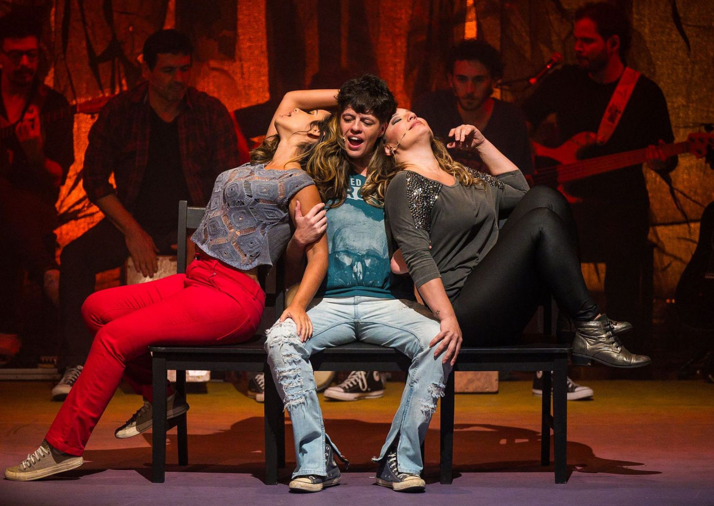

Foto — Divulgação
Teatro
"Cássia Eller, O Musical" Faz Última Temporada em São Paulo
Após uma década em cartaz, Cássia Eller, O Musical se despede dos palcos de São Paulo em uma temporada final de apenas 10 apresentações.…